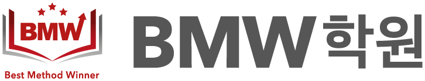
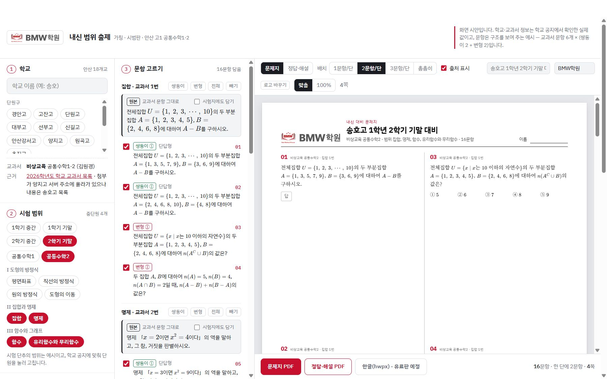
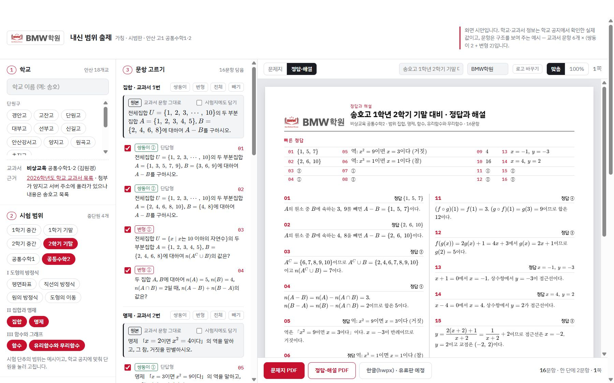

내신 범위 출제가칭 · 시범판시범판 · 안산 고1 공통수학1·2 · 인문계고 18곳
학원 선생님이 학교와 시험 범위를 고르면, 그 학교 교과서(출판사 자동)에 맞춘 쌍둥이·변형 문제 시험지와 정답·해설을 바로 받는 출제 서비스입니다. 문제 생성·해설·조판은 Claude 파이프라인으로 만듭니다.

화면 시안 · 학교를 고르면 교과서가 자동으로 정해지고, 시험 범위의 교과서 문항마다 쌍둥이 2문항·변형 2문항을 골라 문제지를 바로 미리 봅니다.
How it works
세 번 고르면 시험지와 정답·해설이 나옵니다.
안산 인문계고 18곳 중 학교를 고르면, 학교 공지로 확인한 그 학교 교과서(출판사)가 자동으로 정해집니다.
1·2학기 중간·기말과 과목(공통수학1·2)을 고르고, 학교 공지에 맞춰 단원을 눌러 범위를 맞춥니다.
교과서 문항(원본)마다 쌍둥이 2문항(숫자만 다름)·변형 2문항(조건·묻는 것을 바꿈)을 골라 문제지 PDF와 정답·해설 PDF로 받습니다. 한글(hwpx) 출력은 유료판에서 제공할 예정입니다.

정답·해설 화면 시안 · 빠른 정답표와 문항별 풀이가 함께 나옵니다.
Built with Claude
문제 생성부터 해설·조판까지, Anthropic의 Claude를 실제 출제 작업에 쓰고 있습니다. 사이트는 그 작업 방식을 그대로 파이프라인으로 옮긴 것입니다.
학원 수업과 교재 제작에서 이미 매일 쓰는 작업들입니다.
Company
봉수학은 수학 강사 김봉현이 운영하는 수학 교육 콘텐츠 회사입니다. 학원 현장에서 수능·내신 교재와 프린트를 직접 만들어 쓰면서, 그 제작 과정을 Claude로 자동화해 왔습니다.
「내신 범위 출제」는 그 작업 방식을 학원 선생님 누구나 쓸 수 있는 서비스로 옮기는 첫 제품입니다. 시범판을 먼저 열고, 유료판에서 범위와 출력 형식을 넓혀 갑니다.
학교별 내신 대비 시험지를 빠르게 만들어야 하는 학원 선생님.
내 학교 교과서와 시험 범위에 맞춘 연습 문제가 필요한 학생과 학부모로 넓힙니다.
Tools
같은 문항 DB와 Claude 파이프라인 위에서 돌아가는 도구들입니다.
수능 기출·시중 교재 DB에서 문항을 골라 테스트지·오답지를 뽑는 출제 프로그램 (PDF·한글 출력).
오이지를 학원 선생님용으로 간추린 버전으로, 매일 10문항 데일리 테스트용입니다.
Books
수능 대수 교재 BK_수능대수(11단원 + 해설 별책)와 BMW 내신 교재·프린트 시리즈를 만들고 있습니다. 교재는 제본해 판매할 계획입니다.
About (English)
Bongsuhak is a math-education content company run by math instructor Bonghyeon Kim. We write and typeset our own textbooks and worksheets for Korean high-school math (both the national CSAT and school exams), use them in our own academy, and have been automating that production work with Claude.
내신 범위 출제 (working title, “School-Exam Range Builder”) is our first product built on that workflow: an exam-builder for Korean high-school math tutors. A tutor picks a school and its exam range; the service knows that school’s textbook (publisher selected automatically) and, for each textbook problem, offers two “twin” problems (same structure, new numbers) and two variant problems (changed conditions or questions). The tutor assembles a test paper and receives it with answer keys and step-by-step solutions as PDF (HWPX planned for the paid tier). The pilot covers Grade 10 Common Math 1·2 at 18 general high schools in Ansan, Korea.
How we use Claude: problem generation, answer verification, solution writing and typesetting run as a Claude pipeline — input (school, textbook, exam range, source problems) → Claude (generate twin/variant problems and verify answers, write solutions, typeset) → output (test paper and solutions PDF). Beyond the site, we already use Claude daily to draw graphs and figures, convert PDF to HWPX, build predicted-exam papers and post-exam analyses, grade OMR sheets, and script handwritten-solution videos. First users are private-academy math tutors; after the paid launch we plan to expand to students and parents. Contact: bong@bongsuhak.com